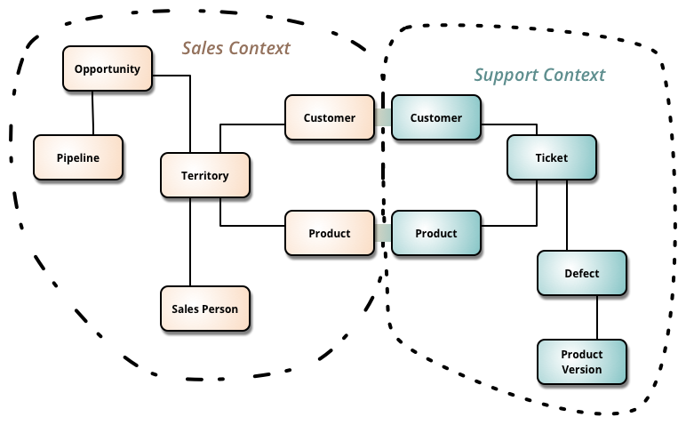

Designing Microservices
✅ What is a Bounded Context?
A Bounded Context is a clear boundary within your system where a specific meaning of data and terms is valid.
Think of it like this:
The same word can mean different things in different departments — and that’s okay, as long as each department (context) is kept separate.

üîç Example:
-
In an eCommerce system:
-
In the Order context, “Customer” means someone who places an order.
- In the Support context, “Customer” means someone who raised a ticket.
They both use the word Customer, but their behavior and data are different.
ü߆ Why it matters?
- Helps teams avoid confusion and conflicts.
- Each context can evolve independently.
- It's a key concept in Domain-Driven Design (DDD) and microservices.
✅ What is Domain-Driven Design (DDD)?
Domain-Driven Design (DDD) is a way of building software that focuses on the real-world problem (domain) your software is trying to solve — and involves close collaboration with domain experts.
üîç Definition:
DDD is about designing your software based on the business, not just the technology.
üß± Key Ideas:
- Domain – The area your software is solving (e.g., banking, e-commerce, healthcare).
- Entities – Things that have an identity (like
Customer,Order). - Value Objects – Objects that don’t have identity, only value (like
Address,Money). - Aggregates – A group of objects treated as one unit (like
OrderwithOrderItems). - Repositories – Interfaces to fetch and store aggregates.
- Services – Business logic that doesn't naturally fit in an entity/value object.
- Bounded Context – A clearly defined boundary within the system where terms and models have specific meaning.
- Ubiquitous Language – A shared language between developers and business users that everyone understands.
üéØ Why use DDD?
- Makes software closer to business reality.
- Reduces miscommunication between devs and domain experts.
- Encourages clean architecture and better code organization.
ü߆ In short:
DDD helps you build software that speaks the business language, and keeps the complexity where it belongs — in the business rules, not in the plumbing.
✅ What is Service Granularity in Microservices?
Service Granularity refers to how big or small a microservice should be — in terms of scope, responsibilities, and size.
üîç Simple Definition:
It's about finding the right size for a microservice — not too big (like a monolith) and not too small (like nano-services).
üß± Two Types:
-
Coarse-Grained Service
-
Has more responsibilities.
- Covers broader business functionality.
- Fewer services to manage, but less flexibility.
-
Example: A single
OrderServicehandles creation, tracking, and billing. -
Fine-Grained Service
-
Has very specific responsibility.
- More services, each doing only one thing.
- Greater flexibility and scalability, but more complexity in communication.
- Example: Separate services like
OrderCreationService,OrderTrackingService,BillingService.
üéØ How to decide the granularity?
Ask:
- Does the service handle one clear business function?
- Can it be owned, deployed, and scaled independently?
- Will splitting or combining services help reduce communication overhead?
- Do services often change together? If yes, consider merging.
ü߆ Rule of Thumb:
A service should do one thing well, and should not be so small that it causes excessive inter-service communication.